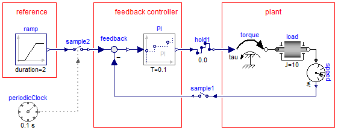

Library Modelica_Synchronous is a Modelica package to precisely define and synchronize sampled data systems with different sampling rates. The library has elements to define periodic clocks and event clocks that trigger elements to sample, sub-sample, super-sample, or shift-sample partitions synchronously. Optionally, quantization effects, computational delay or noise can be simulated. Continuous-time equations can be automatically discretized and utilized in a sampled data system. The sample rate of a partition need to be defined only at one location. All Modelica libraries designed so far for sampled systems, such as Modelica.Blocks.Discrete or Modelica_LinearSystems2.Controller are becoming obsolete and instead Modelica_Synchronous should be utilized.
In the following example a simple sampled data system is shown, where the borders of the discrete-time partition are marked by the sample and hold operators, a clocked PI controller is used in the partition and the sample rate is defined at one location with a clock:

For an introduction, have especially a look at:
Licensed by DLR under the Modelica License 2 |
|
| Copyright © 2012-2013, DLR Institute of System Dynamics and Control |
This Modelica package is free software and the use is completely at your own risk; it can be redistributed and/or modified under the terms of the Modelica license 2, see the license conditions (including the disclaimer of warranty) here or at http://www.Modelica.org/licenses/ModelicaLicense2.
Extends from Modelica.Icons.Package (Icon for standard packages).| Name | Description |
|---|---|
| User's Guide | |
| Library of examples to demonstrate the usage of package Modelica_Synchronous | |
| Library of blocks for clocked signals | |
| Library of clocked blocks for Real signals | |
| Library of clocked blocks for Integer signals | |
| Library of clocked blocks for Boolean signals | |
| Library of types with choices, especially to build menus |